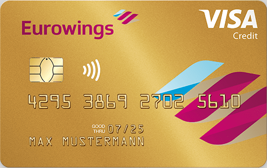

Credit Cards in Germany 🇩🇪

Germany is globally known for being one of the few developed countries that still predominantly
uses cash for the vast majority of daily payments.
As you might imagine, the use of credit cards is not very common, although there are various options,
but rarely do they offer as many benefits as in other countries.
After several weeks of researching this topic, the table above was created as a more comprehensive visual reference, based entirely on my own travel-focused rating criteria.
Key factors in the credit card evaluation criteria:
- Miles / Points Program (or cashback)
- Included travel insurance: Flight cancellation, flight delay, lost baggage, trip cancellation due to illness, rental car coverage.
- Annual fee
- Foreign currency usage fee
- Additional benefits
Some important points regarding Amex cards:
- Acceptance in Germany is quite low, and while it's slightly better in other European countries, it still doesn't come close to Visa and Mastercard.
- It's not practical to have just an Amex card; having a second card is mandatory.
- The Platinum card is undoubtedly the best card, and you can get promotions with Welcome Bonuses that practically cover an intercontinental trip.
- The Platinum card's annual fee might seem high initially, but there are many "cash" benefits and bonuses that effectively reduce the annual fee if you truly utilize all the bonuses.
- If you prefer a different Amex card, the Gold card offers good value for money.
 I strongly recommend everyone to have at least the
Amex Payback card,
which is free.
I strongly recommend everyone to have at least the
Amex Payback card,
which is free.
When combined with all the possible Payback bonuses, plus the annual bonus transfer, and the Amex Max package that doubles the points for every 2 EUR, this card is the best option to accumulate points that convert to Miles & More miles. [referral link]
If you're considering signing up for any other Amex card besides Payback, DO NOT sign up for Payback first!
You need to wait 18 months to be eligible for Welcome Bonuses if you already have an Amex card.
Which other cards are worth considering?
 As you can see in the above rating table, the Eurowings Premium card scored the highest in each analyzed category.
It generates Miles & More miles, valid for 36 months, has excellent insurance coverage,
comparable to or better than Amex Platinum, has no extra fees for foreign currency usage,
and offers a few extra benefits if you ever use Eurowings.
The card is issued by Barclays bank and is quite flexible regarding early payments and even interest-free installments.
If a slightly less comprehensive insurance package is sufficient for you, the Eurowings Classic card is the best option for generating Miles & More miles and still offers some additional minor benefits.